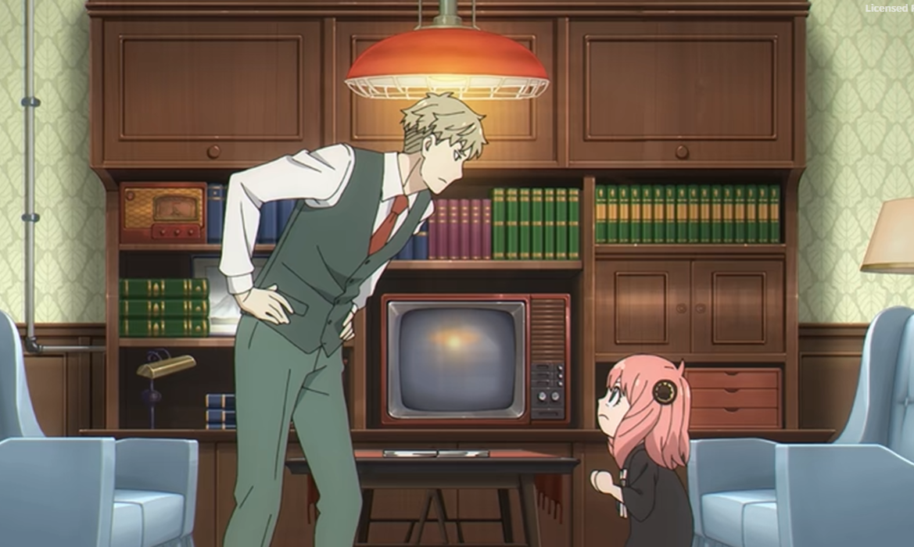
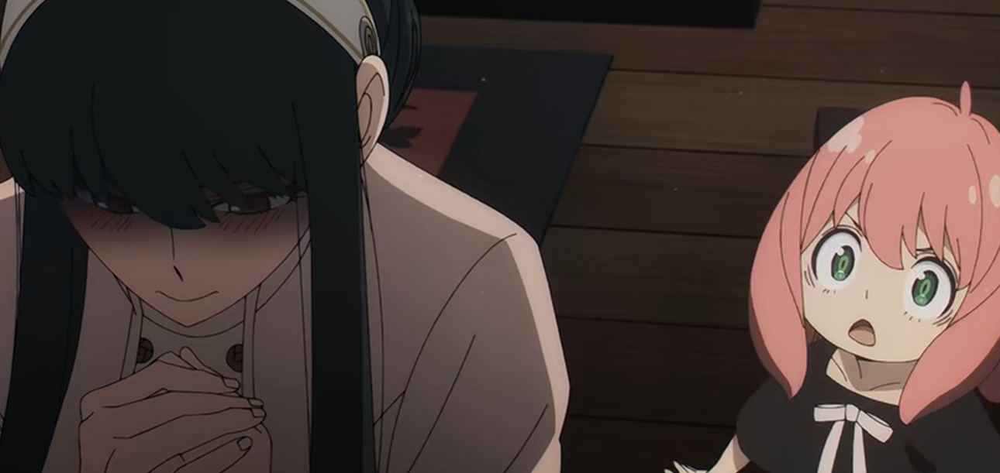
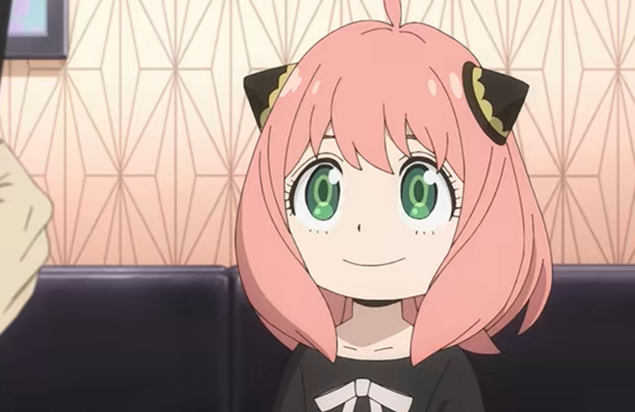
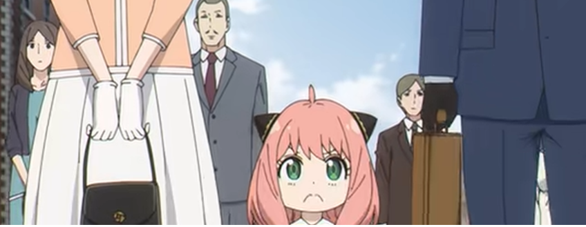
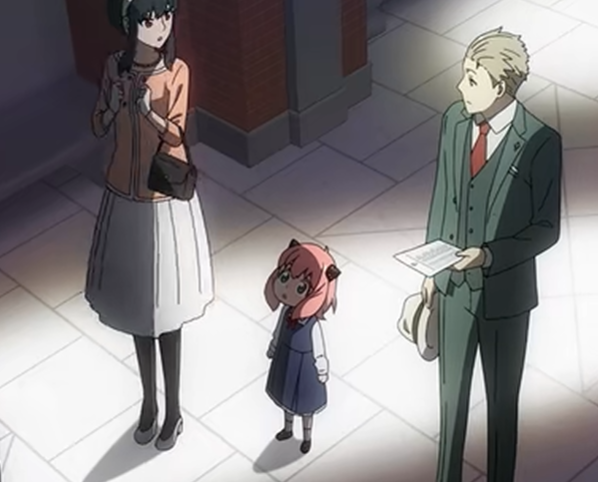
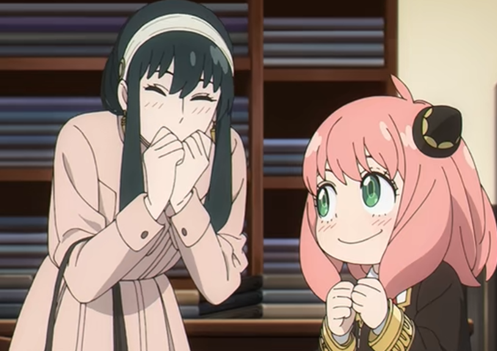

About
Spy × Family (stylized as SPY×FAMILY and pronounced "spy family")[4][5][6] is a Japanese web manga series written and illustrated by Tatsuya Endo. The story follows Agent Twilight, an enigmatic spy who has to "build a family" to execute a mission, not realizing that his adopted daughter is a telepath, and the woman he agrees to marry is a skilled assassin. The series has been serialized biweekly on Shueisha's Shōnen Jump+ app and website since March 2019, with its chapters collected in 17 tankōbon volumes as of April 2026. It is licensed in North America by Viz Media. An anime television series adaptation produced by Wit Studio and CloverWorks aired from April to December 2022, with a second cours aired from October to December of the same year. The second season, continuing from 2022's adaptation, aired from October to December 2023. A third season aired from October to December 2025. An anime film titled Spy × Family Code: White, featuring the cast from the television series reprising their roles, was released theatrically in Japan in December 2023 and in the United States and Canada in April 2024. By December 2025, Spy × Family had over 41 million copies in circulation, making it one of the best-selling manga series of all time. The series has received critical acclaim for its storytelling, humor, characters, action scenes, and artwork.
Tatsuya Endo and his editor Shihei Lin have known each other for over ten years; Lin was his initial editor on his first manga series, Tista (2007). When Lin was moved from the Jump Square editorial department to Shōnen Jump+, Endo happily followed, and they began developing a new work. Spy × Family takes elements from three of Endo's Jump Square one-shots: Rengoku no Āshe (煉獄のアーシェ; lit. "Ashe of Purgatory"), Ishi ni Usubeni, Tetsu ni Hoshi (石に薄紅、鉄に星; lit. "The Pink in Stone, the Star in Steel"), and I Spy. Lin said that its reception among the editorial department was so positive that serialization was practically decided before the official meeting was even held. The initial draft was given the working title Spy Family written in Japanese. When deciding the final name, Endo came up with over 100 options, but they ultimately decided to use the same title but in English and with a "cross" in between, the latter influenced by Hunter × Hunter.[9] Lin said that he and Endo are always conscious of the line where violence, a necessary aspect in a spy manga, is given a pass for comedy's sake. With Tista and Blade of the Moon Princess both having a dark tone, the editor told Endo to give Spy × Family a more cheerful one. Anya was inspired by the main character of Rengoku no Ashe. Her extrasensory perception was decided early on, and Lin cited its use for
comedic effect as one of the series' strengths. Lin said that the series has a broad readership among all ages and genders. He also cited Endo's clean art and ability to convey emotions as part of the manga's appeal. Lin feels that the world and characters were firmly established as of volume two. As such, he revealed that he and Endo would start to include longer narratives in the series.
EPISODES
| Operation Strix |  |
|---|---|
| Secure a Wife |  |
| Prepare for the Interview |  |
| The Prestigious School's Interview |
 |
| Will They Pass or Fail? |  |
| The Friendship Scheme |  |
STORYLINE
At its core, Spy x Family is a brilliant mix of high-stakes espionage and heartwarming "found family" comedy. Set in a world reminiscent of the Cold War, it follows three individuals who form a fake family, each keeping a massive secret from the others to maintain peace between the nations of Westalis and Ostania.
The story begins when Westalis's top spy, codename Twilight, is assigned a mission of utmost importance: Operation Strix. To prevent a war, he must get close to Donovan Desmond, a reclusive Ostanian politician who only appears at functions for his son's elite school, Eden Academy. To infiltrate these social circles, Twilight assumes the identity of Loid Forger, a psychiatrist, and realizes he needs a wife and child within one week.
The irony of the series is that while Loid thinks he is the only one living a double life, his new family is just as extraordinary:
Loid Forger (The Spy): A master of disguise who believes he's abandoned all emotion for the sake of his
mission, yet constantly finds himself genuinely caring for his fake family.
Yor Forger (The Assassin): To avoid suspicion of being a single woman (which is seen as "suspicious" in Ostania), she agrees to the fake marriage. By day, she's a clerk; by night, she's the deadly Thorn Princess.
Anya Forger (The Telepath): A young girl Loid adopts from an orphanage. She is a former test subject who can read minds. She is the only one who knows everyone's true identity, and she uses her powers to keep the family together so she doesn't have to go back to the orphanage.
Bond (The Precognitive Dog): Later, the family adopts a dog who can see the future. He and Anya form a psychic duo to prevent various disasters.